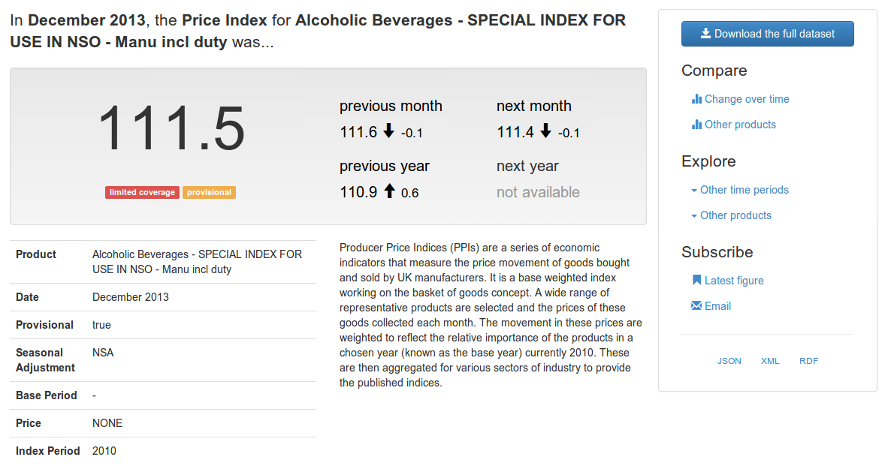
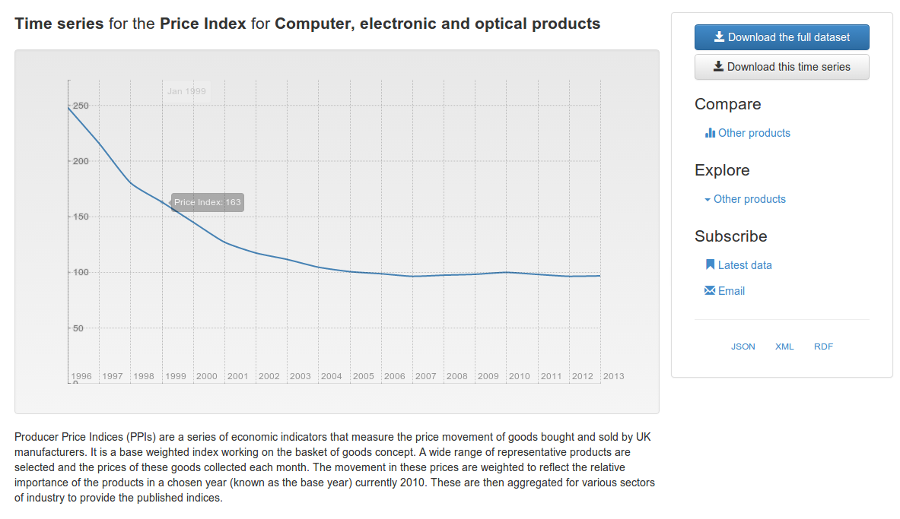

Publishing Open Statistical Data

At the request of the ONS, the ODI tech team have recently been exploring some ideas around publishing statistical open data. This blog post shares some of the results of that thinking and you can also explore a proof-of-concept that showcases some of these ideas with real-world data.
Obviously, there are plenty of existing best practices for data publication that should be followed regardless of the type of data being published: clear licensing, availability of bulk downloads, use of standard, open formats, are all important. The guidance in the Open Data Certificate questionnaire applies to all types of data, including statistics.
But arguably there are some specific challenges that apply to the publication and re-use of statistical data. These challenges are partly due to the inherent complexity of (even simple) statistical publications. Communicating this context effectively is incredibly important in understanding and properly interpreting this type of data.
The wide community of re-users of statistical data, each have their own distinct needs, also presents challenges: politicians, policy makers, journalists, application developers and members of the general public all need to access to official statistics at various times and in different ways.
It is vital that statistical data is published in a way that makes it easy to locate, easy to understand, and easy to use. Statistical data needs to be immediately accessible to all users and this is as much about good user experience design as it is about ready access to bulk downloads and APIs.
There are four key elements to what the team have been exploring so far.
Documentation is Vital
Documentation is a vital part of a statistical data release. Many statistical organisations publish analysis alongside their raw data. It is this analysis that starts to tell the initial stories around the data, drawing out the key highlights.
But at a deeper level all aspects of the dataset need to be documented, and this information needs to be readily available in both human and machine-readable forms:
- What are the dimensions of the dataset? If the dimension is based on a code list or controlled vocabulary then what do the individual values mean and how do they relate to one another?
- What is actually being measured?
- What contextual information is required to understand individual values? For example are the numbers provisional, or are they based on limited coverage?
- Is this the latest data available? When was it published? Has it been revised?
Unfortunately it can often be difficult to answer these questions. Even when the raw data is available, the context required to properly interpret the data is not readily available.
Statistical data, more than any other form of government open data, is prone to being published in carefully formatted Excel spreadsheets. The formatting is usually unnecessary, but often its there to communicate some additional context. Provisional values may be in italics. Letter codes might be added to individual data points, referencing footnotes that provide some important notes on interpreting the value.
When we publish data to the web we can do better: We can link directly to the necessary context, in both the human and machine-readable views of the data.
Link All The Things
Every aspect of a statistical dataset should be part of the web: the dataset, its structural elements (dimensions, attributes and measures), and every individual observation should each have a unique URL.
If observations have their own URLs then users can link to individual data points. This allows analysis to be directly linked to its supporting evidence.
Dynamic URLs can be used to redirect to the latest figures, ensuring that people are always accessing the latest data. But the archive of individual observations can still be navigated by linking together observations collected in the previous month, quarter, or year.
If all of the structural elements of a dataset have unique identifiers, then the definitions of terms become accessible from a single click, rather than searching through supporting notes and documentation.
Slicing and Dicing

There are many differents ways to slice through a statistical dataset. Comparisons can be made across different dimensions to create time-series and other charts. Rather than create a few fixed presentations, e.g. individual data tables or static charts, the data should be published via an API that supports dynamically slicing the data. This facilitates the creation of more dynamic presentations of the data:
- Developers can use the API to extract the collection of data points they need, rather than downloading a whole dataset
- Users can navigate through a dataset to generate simple visualisations, e.g. time series of some area of interest
This can also simplify the production processes that support the creation of statistical releases allowing analysts to dynamically generate whatever charts and tables are required.
Embeddable Views
Dynamic views of the data should not be confined to the original website. The charts and data tables produced for end-users should be embeddable in other websites, allowing them to be included in news reports, blog posts, etc.
This greatly simplifies the process of data re-use for many users. Seamless sharing of information, via linking, is an important part of how discussion happens on the web today. Embeddedable views also help address questions of provenance and trust by allowing readers to easily locate the original data sources referenced in an article.
Taken together we think these four elements will usefully complement publication of raw open data; help to integrate statistical data into the web; and make it easier for all types of user to make the most from statistical publications.
Visit the proof-of-concept application to explore how some of these ideas work in the context of the Producer Price Index dataset and for more background on how we built the application.